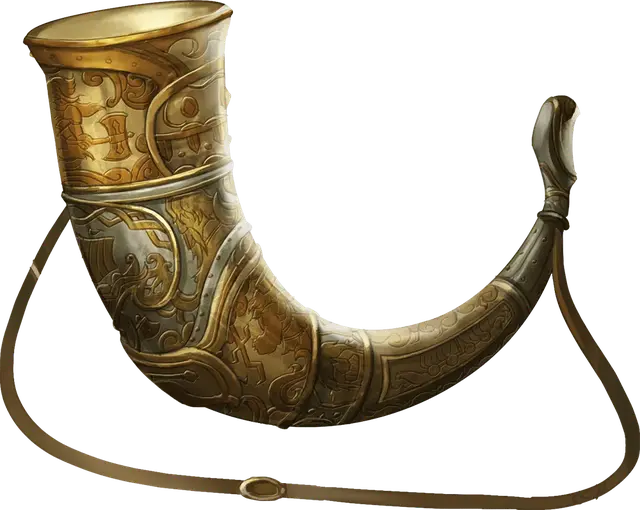

Рог Валгаллы
Horn of Valhalla
Чудесный предмет, редкость варьируется (серебряный - редкий, латунный - редкий, бронзовый - очень редкий, железный - легендарный)

Вы можете действием подуть в этот рог. После этого в пределах 60 футов от вас появляются духи воителей с плана Асгард. Эти духи используют статистику берсерка [berserker] из Бестиария. Они возвращаются в Асгард через 1 час, или когда их хиты опускаются до 0. Рог нельзя использовать повторно, пока не пройдёт 7 дней. Существует четыре вида рогов Валгаллы, изготовленных из разных материалов. Вид рога определяет, сколько берсерков будет призвано, а также требования для их использования. Мастер определяет вид рога самостоятельно или случайным образом. Если вы подуете в рог, не выполняя требований, призванные берсерки нападут на вас. Если вы выполняете требования, они будут дружественны к вам и вашим спутникам, и будут выполнять ваши команды.
| к100 | Вид рога | Берсерки | Требование |
| 01-40 | Серебряный | 2к4+2 | Нет |
| 41-75 | Латунный | 3к4+3 | Владение всеми видами простого оружия |
| 76-90 | Бронзовый | 4к4+4 | Владение всеми видами средних доспехов |
| 91-00 | Железный | 5к4+5 | Владение всеми видами воинского оружия |